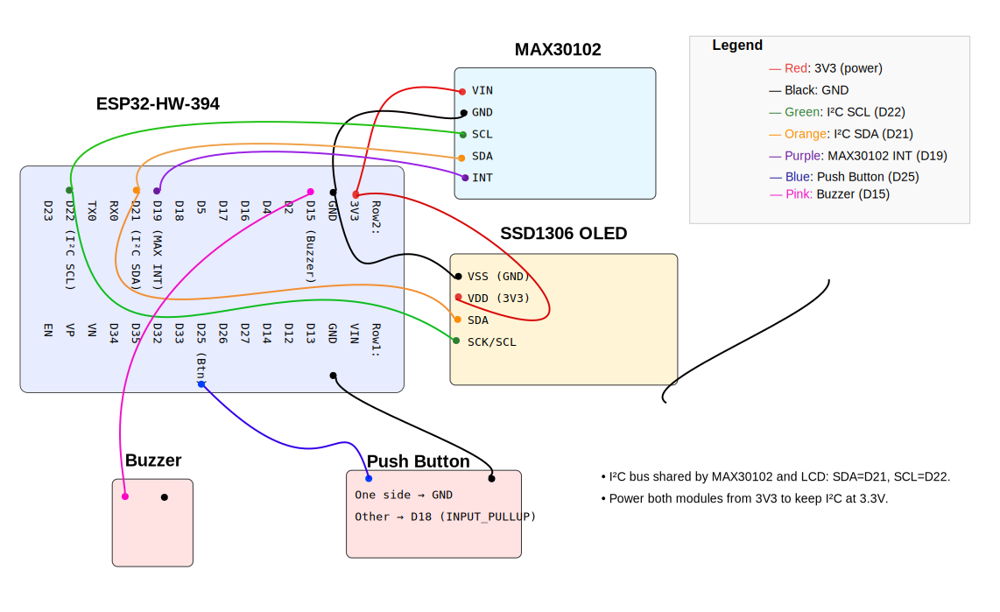

Session,Start Time,Duration (s),Min SpO2 (%),Max HR (bpm),Target Time (s) 1,2025-08-22 10:31,42,93,132,36 2,2025-08-22 10:45,51,92,128,44
Below is a simplified wiring layout showing how the ESP32 connects to the MAX30102 sensor, the 1602A LCD display, and the user button.
This project is demonstrated in stages, then assembled at the end to show the full journey.
Goal: prove the LCD works with the ESP32 at 3.3V I²C (SDA=21, SCL=22). Pass: crisp text, steady for ≥60s.

Goal: verify button input on GPIO18 with internal pull-up enabled.
Method: Wire button between GPIO18 and GND. Program reports Pressed / Released to Serial Monitor.
Pass: 50 presses without false triggers.

Goal: confirm audible output from buzzer on GPIO19.
Method: GPIO19 drives a 3.3 V active buzzer. Code pulses HIGH for 200 ms every second.
Pass: buzzer beeps once per second, clearly audible.
Replaced the 1602 with a 0.91" SSD1306 OLED (I²C @ 0x3C). Clean, high-contrast text at 3.3 V.
Goal: wire the MAX30102 to the ESP32, confirm I²C comms, and stream raw IR/RED before integrating SpO₂/HR.
Method: Wire as below, run an I²C scanner with Wire.begin(21,22) to see 0x57, then flash the minimal check sketch.
Pass: address 0x57 appears in the scan; IR/RED values change with a finger on the sensor.
Wiring: VIN→3V3, GND→GND, SDA→GPIO21, SCL→GPIO22, INT→GPIO19.
| MAX30102 | ESP32 pin | Notes |
|---|---|---|
| VIN | 3V3 | 3.3 V only |
| GND | GND | Common ground |
| SDA | GPIO21 | I²C data |
| SCL | GPIO22 | I²C clock |
| INT | GPIO19 | Active-low “data ready” (optional) |
// Libraries: SparkFun MAX3010x (MAX30105.h)
#include <Wire.h>
#include <MAX30105.h>
constexpr int PIN_SDA = 21;
constexpr int PIN_SCL = 22;
constexpr int PIN_INT = 19; // optional
MAX30105 max;
void setup() {
Serial.begin(115200);
delay(200);
Wire.begin(PIN_SDA, PIN_SCL);
if (!max.begin(Wire, I2C_SPEED_FAST)) {
Serial.println("MAX30102 not found (check 0x57, power, SDA/SCL).");
while (1) delay(10);
}
// Conservative first-light settings
byte ledBrightness = 0x1F; // 0x00..0xFF
byte sampleAverage = 4; // 1,2,4,8,16,32
byte ledMode = 2; // 2 = Red+IR
byte sampleRate = 100; // 50..1000
int pulseWidth = 411; // 69,118,215,411 us
int adcRange = 4096; // 2048..16384 nA
max.setup(ledBrightness, sampleAverage, ledMode, sampleRate, pulseWidth, adcRange);
max.setPulseAmplitudeRed(0x1F);
max.setPulseAmplitudeIR(0x1F);
pinMode(PIN_INT, INPUT_PULLUP); // safe even if breakout already has pull-up
Serial.println("MAX30102 ready — cover sensor with finger.");
}
void loop() {
long ir = max.getIR();
long red = max.getRed();
if (ir == 0 && red == 0) {
Serial.println("No data — check finger placement.");
} else {
Serial.print("IR: "); Serial.print(ir);
Serial.print(" RED: "); Serial.println(red);
}
delay(50);
}